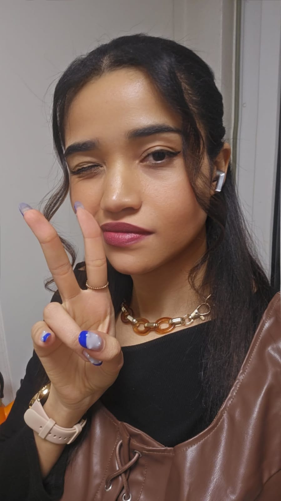
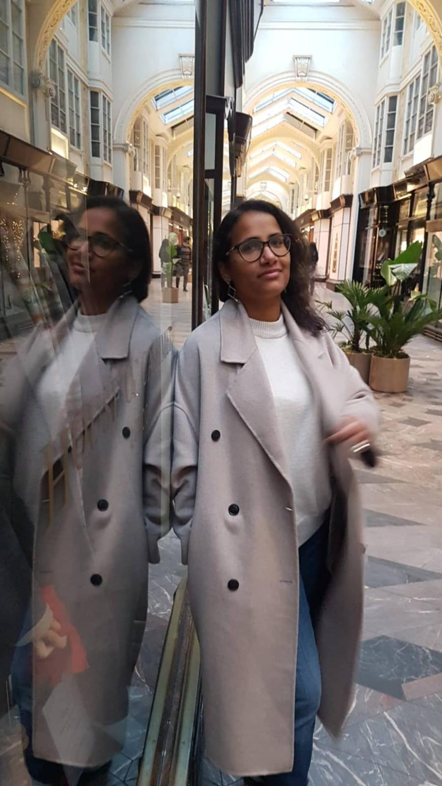
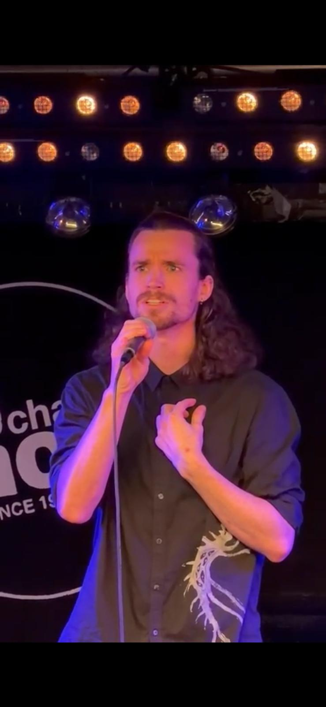
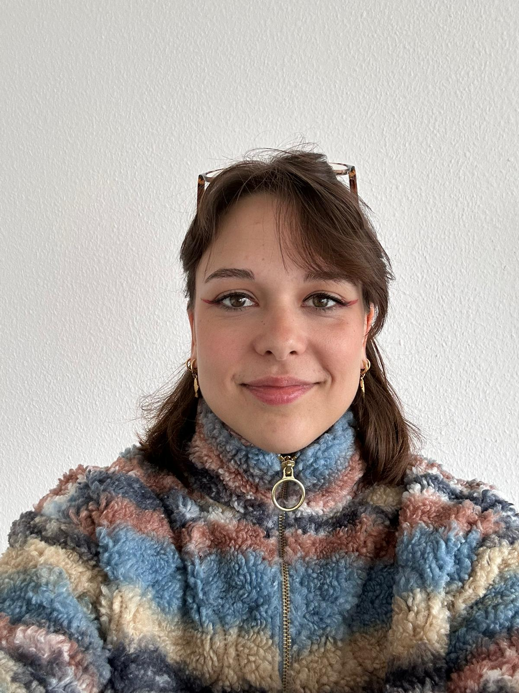
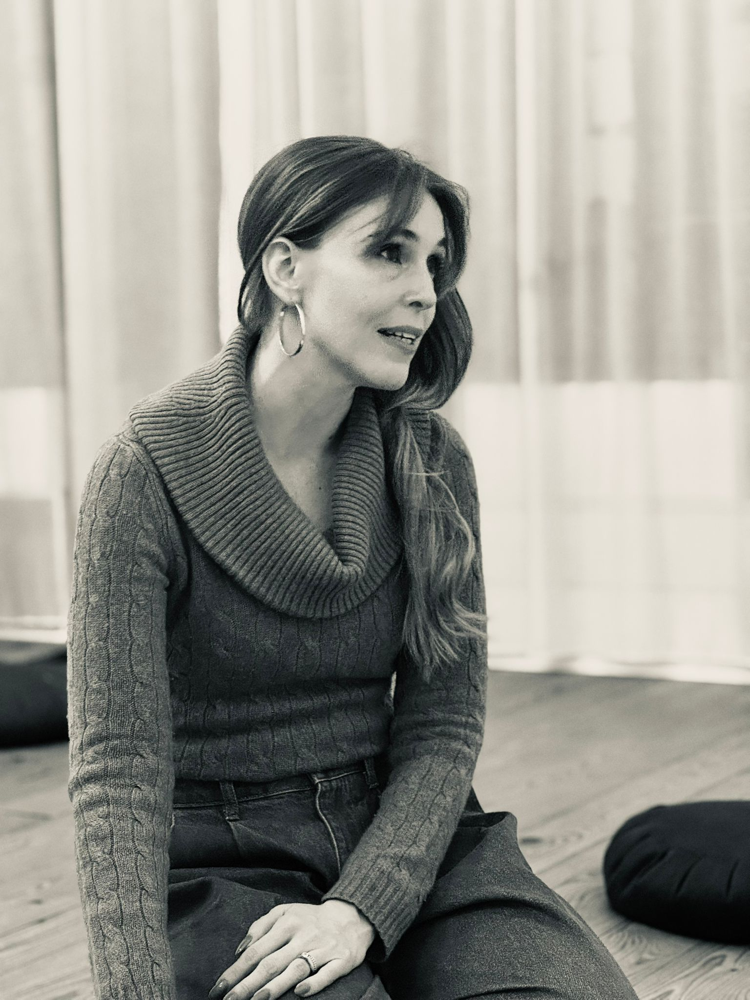
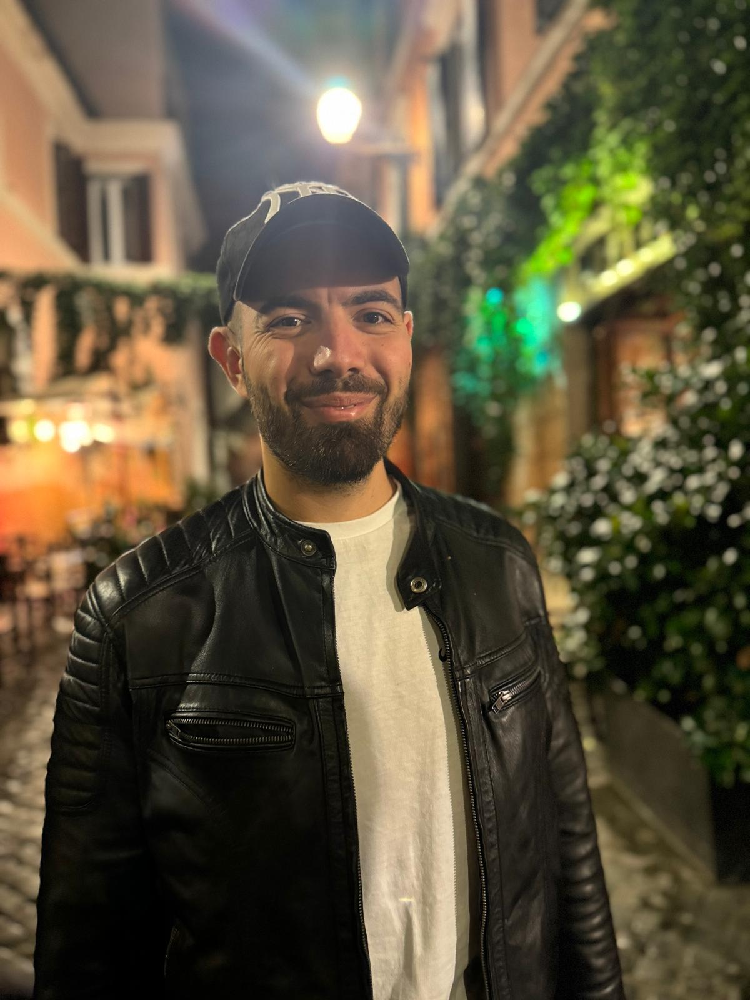

The people behind the voice
A team of artists, educators, and practitioners united by a shared belief: that the voice has the power to transform.
Our team
Artistic Director
Imane El Baladi is a singer, vocal coach, and creator of Expressive Singing — a unique approach that blends voice, emotion, body, and imagination.
With a background in mediation sciences and a Master in Artistic Vocology, she guides children and adults to explore their voice beyond technique, as a powerful tool for expression and connection.
Through workshops, group singing, and musical theatre, she creates spaces where the voice becomes a living experience — authentic, embodied, and deeply human.
Her work bridges art and transformation, inviting each person to reconnect with their voice and their inner world.

Vocal Coach & Performer
Brings fierce energy and technical precision to every session. Anna specialises in contemporary styles and helping singers find their own, unmistakable sound.

Voice & Movement Teacher
Trained in both classical voice and somatic movement, Moniah guides singers to connect breath, body and emotion into a unified, powerful presence.

Performer & Vocal Trainer
A seasoned stage performer with a gift for storytelling through song. Audren brings the same raw authenticity he shows on stage into every lesson and masterclass.
Musical Director & Guitarist
With decades of musical experience across genres, Fabrice shapes the harmonic landscape of Expressive Singing's productions and accompanies singers with sensitivity and depth.

Vocal Coach & Workshop Facilitator
Playful, curious and deeply attuned to people, Xenia brings warmth and creativity to every workshop she leads. She has a special gift for making beginners feel at home in their own voice.

Somatic Practitioner & Retreat Guide
With a background in somatic therapy and mindfulness, Brigitte holds space for deep listening — of the body, the breath, and the voice. She leads our retreats and voice & stillness sessions.

President of the Foundation
Leads the development of Expressive Singing, building bridges between artistic excellence and community impact.